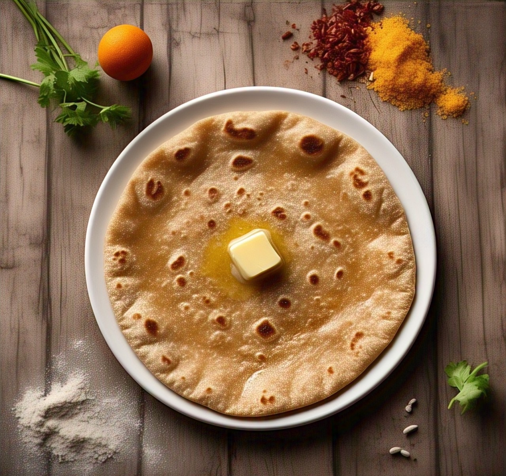
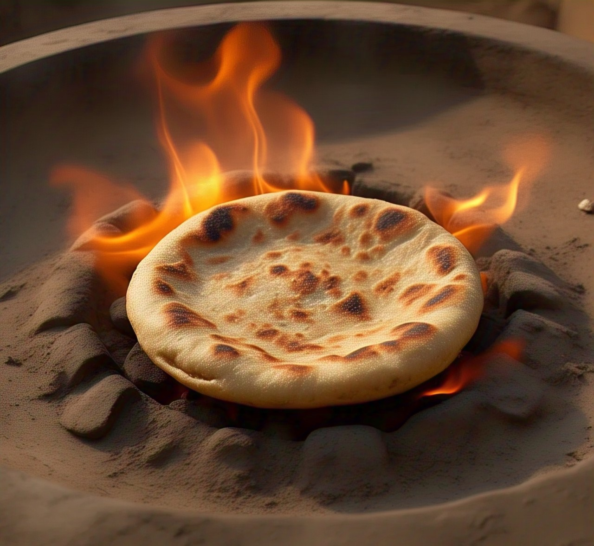

Chapati
Ingredients:
- 2 cups whole wheat flour (atta)
- 3/4 cup water (adjust as needed)
- 1/2 tsp salt
- 1 tbsp oil or ghee (optional, for softness)
- Extra dry flour (for rolling)

Recipe:
- Make the Dough:
- Take wheat flour and salt in a mixing bowl.
- Gradually add water and knead to a soft, smooth dough.
- Add oil/ghee and knead for 2-3 minutes more.
- Cover with a damp cloth and rest for 20-30 minutes.
- Rolling Chapati:
- Cut the dough into equal-sized balls.
- Roll each ball into a thin, round shape with a rolling pin. Use dry flour to avoid sticking.
- Cooking Chapati:
- Heat a tava (griddle) on a medium-high flame.
- Keep the rolled chapati on the hot tava. Cook for 30-40 seconds on one side, flip.
- Cook other side till there are brown spots, flip.
- Press lightly with a spatula; it puffs up.
- Take out and add ghee or butter as desired.
Roti
Ingredients:
- 2 cups whole wheat flour (atta)
- 3/4 cup water (adjust as needed)
- 1/2 tsp salt
- Extra dry flour (for rolling)

Recipe:
- Make the Dough:
- Take wheat flour and salt in a mixing bowl.
- Gradually add water and knead to a soft, smooth dough.
- Add oil/ghee and knead for 2-3 minutes more.
- Cover with a damp cloth and rest for 20-30 minutes.
- Rolling Roti:
- Cut the dough into equal-sized balls.
- Roll each ball, slightly thicker than chapatis. Use dry flour to avoid sticking.
- Cooking Roti:
- Heat a tava (griddle) on a medium-high flame.
- Keep the rolled roti on the hot tava. Cook for 30-40 seconds on one side, flip.
- Cook other side till there are brown spots, flip.
- Cook on a hot tava similar to chapati, but slightly longer on both sides till deep brown marks are seen.
Optional: Puff the roti directly over open flame using tongs for 5-10 seconds.
Bhakri
Ingredients:
- 2 cups jowar (sorghum), bajra (pearl millet), or rice flour
- 3/4 cup hot water (add more as needed)
- Salt to taste (optional)

Recipe:
- Make the Dough:
- Warm water until not boiling.
- In a bowl, combine the flour and salt.
- Slowly add warm water and knead into a soft, workable dough. (This will be more crumbly compared to wheat dough and must be pressed rather than rolled.)
- Shaping Bhakri:
- Take a dough ball and press using fingers on a rolling board to flatten it.
- Apply a small amount of water on your hands to smooth the edges.
- Cooking Bhakri:
- Put on a hot tava and cook on a medium-high flame and apply water on its surface.
- Flipping after 30-60 seconds, cook the other side.
- Flip again after one side is cooked well and press lightly with a cloth or spatula so it puffs up a little.
- For a real smoky taste, hold it near the flame for a few seconds.
Serves well with: